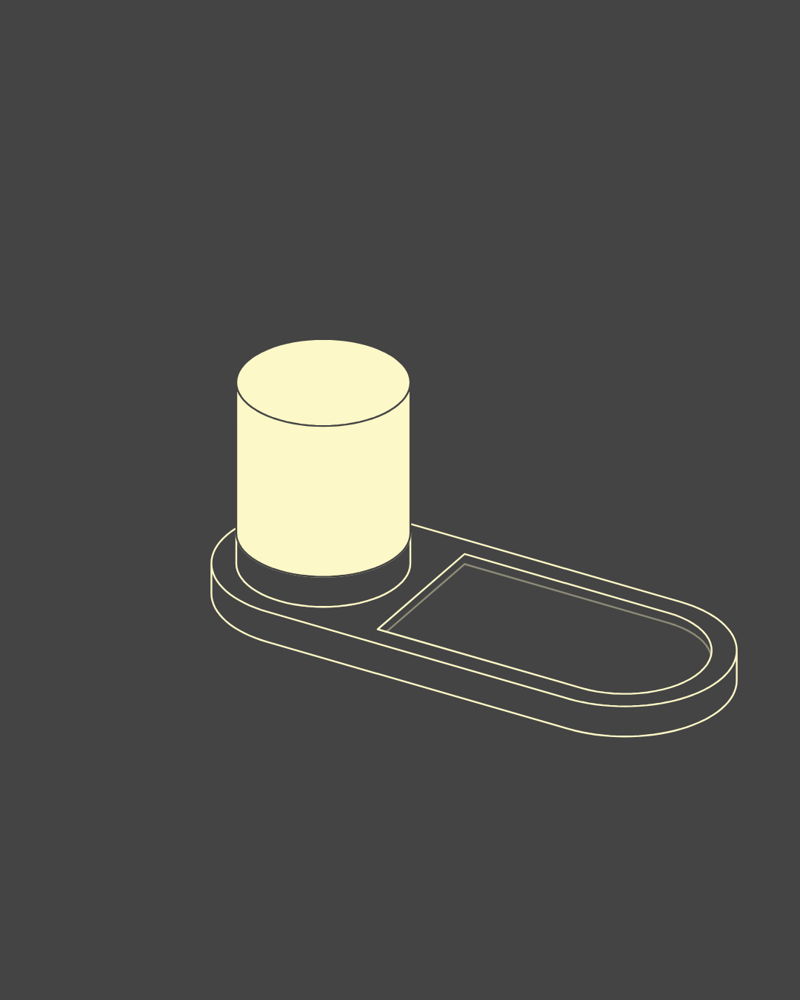

protótipo · cenas do foguete, redesenho
O foguete passa a ser desenhado do mesmo jeito que o logo e a luminária: uma linha creme fina, cantos redondos e quase nada preenchido. Só o que é luz ganha cor: a chama, o visor, a escotilha acesa e a bandeira. As três cenas seguem a mesma ordem de antes.

mesma espessura de linha, mesmas formas redondas, luz só onde acendeCápsula com bico redondo e duas linhas curvas no casco, como as elipses da luminária. Visor redondo aceso em âmbar. Ele sai de uma base em pílula, a mesma forma da base da luminária.
A Terra e a Lua viram um arco grande desenhado com a mesma linha. Fumaça, poeira e explosão viram bolhas e anéis em traço. Estrelas são pontos e brilhos em cruz, sem céu colorido.
Andaime, guindaste e bonequinhos em linha, com capacete âmbar. A metade de cima do foguete fica tracejada até a noite acabar. No pouso a escotilha acende, o astronauta desce e crava uma bandeira âmbar com "7 noites".